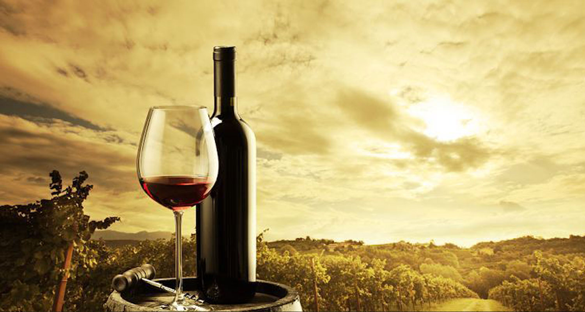
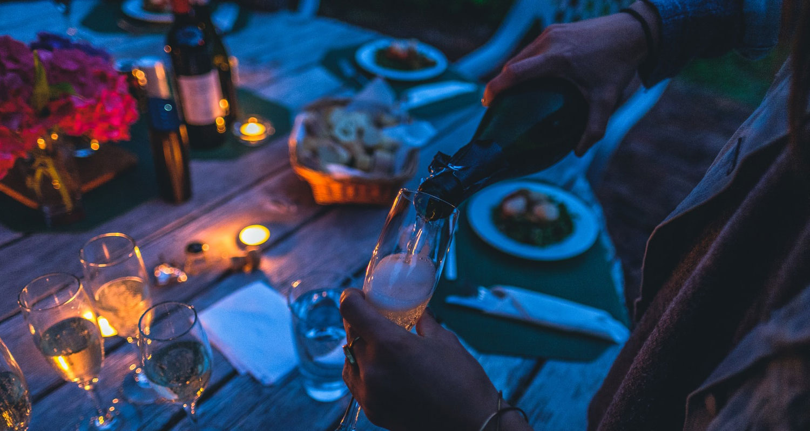
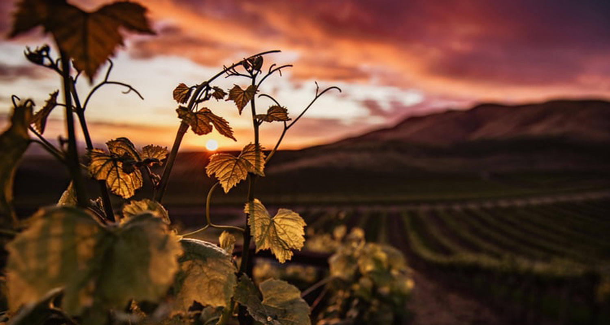
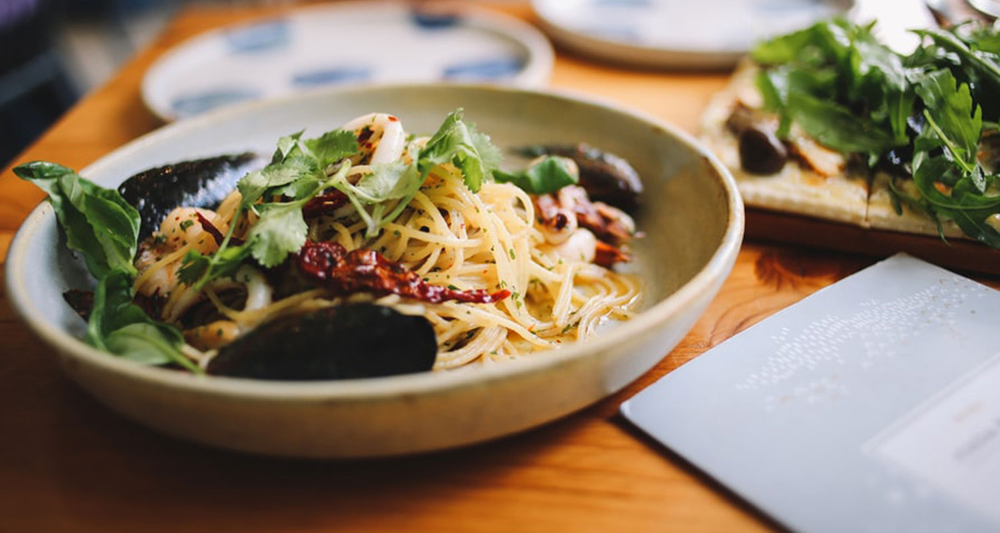

6 interesting facts about Italy not everyone knows
Italy has always been famous for its food and wine, both of which play an important role in its cuisine and differentiation. It is not surprising to say that most of us like to enjoy one or two glasses of Italian wine at dinner when we go to a restaurant.
However, drinking and understanding the source are two completely different things. So, let's get to know these 9 very interesting facts about Italian wine.
1. Italy produces more alcohol than any other country
As of this year, 39,300 hectoliters of wine have been produced by Italy. But we don't recommend it all at once.
2. Italian wine has a long history

History shows that Italian wine was present more than 4,000 years ago, and scientifically proven, Italy has a perfect environment for growing grapes and making wine, mainly thanks to the excellent climate of this country.
In fact, as soon as the ancient Greeks arrived in southern Italy, wine became part of the culture and cuisine here. Importantly, the whole nation was later named "Oenotria" (translated as 'wine land').
3. Quality is always exceptionally high

Italians take great pride in growing grapes and making wine, so much so that two-thirds of Italian wine has 39% DOP or 30% IGP. Both indices promise a bottle of wine of authenticity and high quality.
4. There is a long list of grape varieties to choose from
Italy grows many diverse and diverse grape varieties. Currently, they use more than 400 types of grapes to produce the many wines they make today.
The top three types of Italian grapes for regional production, are: Sangiovese, Trebbiano, Montepulciano.
5. Veneto: the heart of Italian wine

Similar to Venice - one of Italy's most romantic and attractive tourist destinations, Veneto is also famous as the country's largest wine-producing region. In 2016, the region produced more than 10,000 hectoliters of wine, far ahead of the nearest thousand hectolit competitors.
6. Italian wine and spaghetti are a pair of births
What is more characteristic than a glass of wine and a hot plate of pasta?

Fortunately, those who have difficulty in "pairing" food with wine have a little tip for you, the "pairing" rule of Italy is super simple: red goes with red, white goes with white wallet. for example:
- Pasta with tomato sauce is best served with a glass of medium red wine.
- A dish of spaghetti with cream sauce is perfect when served with a glass of white wine.
- A plate of seafood pasta can be eaten with a glass of sweet white wine.
- And spaghetti plate with vegetables is very suitable when served with a glass of white wine.
After knowing 6 very interesting points, does anyone know if you want to visit this beautiful country?